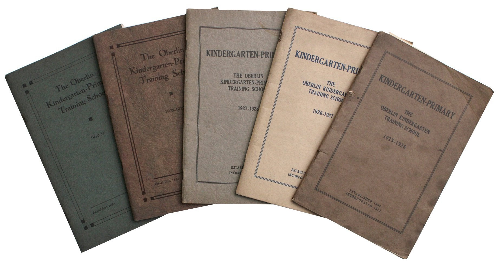
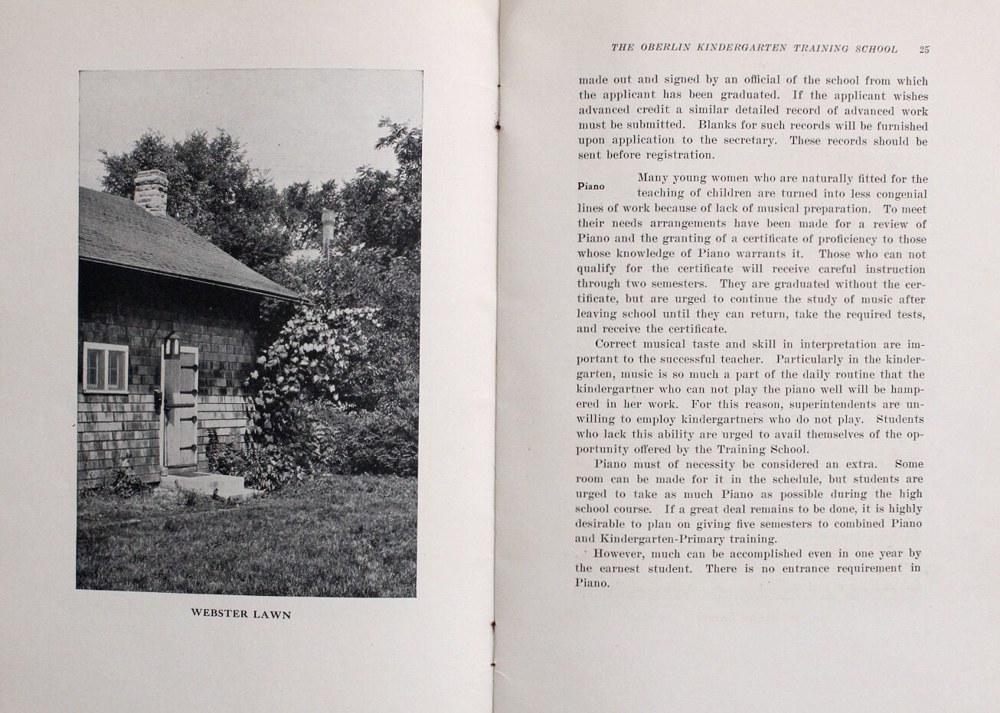
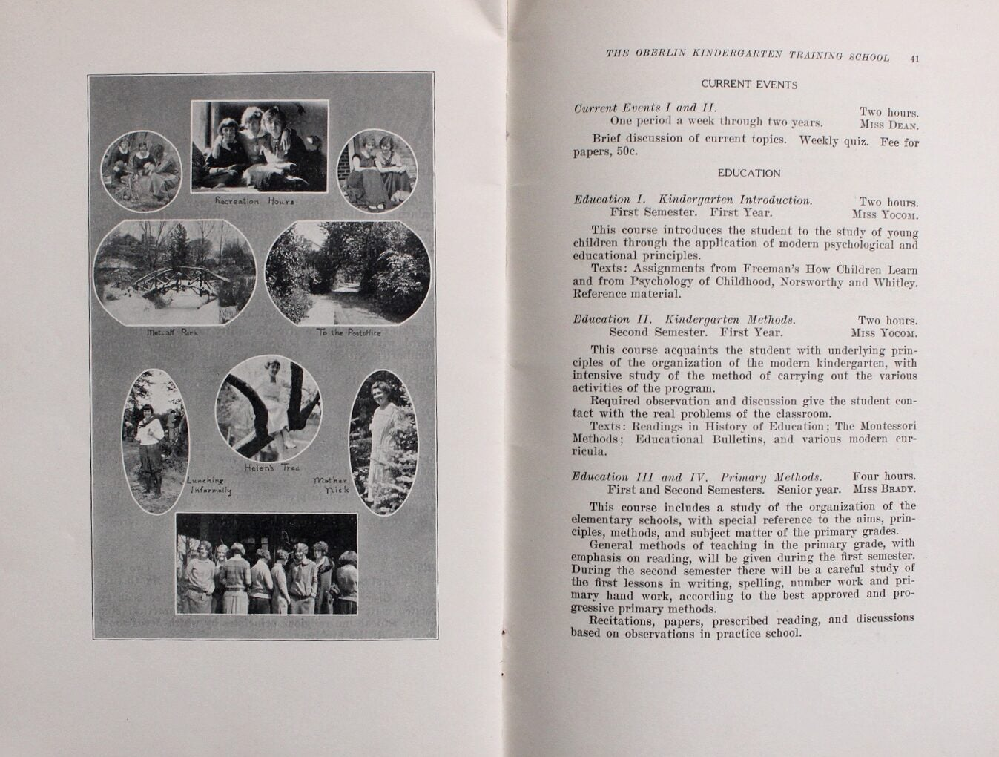

Five Catalogs of the Oberlin Kindergarten Training School Ohio
1925–1931年间五册；单张内页所属册未核 · Oberlin Kindergarten(-Primary) Training School；书影提供：Langdon Manor Books
公开书影的印页25说明钢琴教学及熟练证书；印页41的幼儿园导论列儿童心理学教材。五册封面和两张内页已保存，可直接对照该校教育与音乐训练的关系。The photographed p. 25 describes piano instruction and a proficiency certificate. On p. 41, Kindergarten Introduction assigns a childhood-psychology textbook. The covers and two interior images are preserved for comparison.
幼师学校的教学Teaching at the training school
校方馆藏指南称该校原为独立学校，1932年并入欧伯林学院教育系（Department of Education）。已核资料未证明当时有正式名为“教育学院儿童心理专业”的学位。The college’s finding aid describes an independent training school absorbed into the Department of Education in 1932. These records do not establish a degree formally named Child Psychology in a School of Education.
书商货号9547，整组标1925–31。不得把各张内页自动归到1924–25或某一册；钢琴熟练证书不是音乐学士。照片未标识侯涵辉，不能作为她的肖像或就读证据。The seller dates the group to 1925–31; individual interior photographs cannot yet be assigned to a particular edition. A piano proficiency certificate is not a music bachelor’s degree. None identifies Hou Hanhui.



学生档案与年鉴Student records and yearbooks
RG 24第III系列第12箱保存1894–1932年校目，第15箱保存1923–1931年The Okatiess年鉴，第13箱为毕业纪念材料；第I系列第7箱为约1912–1932年学生及校友卡。另有1927–1930年幼师、商科及当地中学的合编学生名录，归入RG 31-021。公开目录未展示侯涵辉本人的条目。RG 24 holds catalogues (Series III, Box 12), The Okatiess yearbooks (Box 15), commencement material (Box 13), and student/alumnae cards (Series I, Box 7). Joint 1927–30 student directories are filed in RG 31-021. The public finding aids do not identify Hou.
Langdon Manor Books · 货号9547 ↗
1924–25课程表的转录与出处1924–25 curriculum transcription and provenance